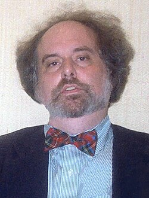

E. Allen Emerson | |
|---|---|
 Emerson in 2022 | |
| Born | June 2, 1954 |
| Died | October 15, 2024 (aged 70) Austin, Texas, U.S. |
| Education | University of Texas, Austin (BS) Harvard University (MS, PhD) |
| Known for | |
| Awards |
|
| Scientific career | |
| Fields | Computer science |
| Institutions | University of Texas at Austin |
| Edmund M. Clarke | |
Ernest Allen Emerson II (June 2, 1954 – October 15, 2024) was an American computer scientist and winner of the 2007 Turing Award. He was a professor at the University of Texas at Austin from 1981 to 2016.
Emerson is credited together with Edmund M. Clarke and Joseph Sifakis for the invention and development of model checking, a technique used in formal verification of software and hardware.[1] His contributions to temporal logic and modal logic include the introduction of computation tree logic (CTL)[2] and its extension CTL*,[3] which are used in the verification of concurrent systems. He is also recognized along with others for developing symbolic model checking to address combinatorial explosion that arises in many model checking algorithms.[4]
Emerson was born in Dallas, Texas, on June 2, 1954. His early experiences with computing included exposure to BASIC, Fortran, and ALGOL 60 on the Dartmouth Time-Sharing System and Burroughs large systems computers.[1] He went on to receive a Bachelor of Science degree in mathematics from the University of Texas at Austin in 1976 and a Doctor of Philosophy degree in applied mathematics at Harvard University in 1981.[1]
In the early 1980s, Emerson and his PhD advisor, Edmund M. Clarke, developed techniques for verifying a finite-state system against a formal specification. They coined the term model checking for the concept, which was independently studied by Joseph Sifakis in Europe.[1][note 1]
Emerson's work on model checking included early and influential temporal logics for describing specifications, and techniques for reducing state space explosion.[1]
Emerson joined the department of computer science at the University of Texas at Austin shortly after his graduation in 1981.[5] He taught at the university for 35 years.[5]
Emerson retired in 2016 from UT Austin.[6] He held the title of Regents Chair Emeritus.[6]
In 2007, Emerson, Clarke, and Sifakis won the Turing Award.[1] The citation reads:
for their role in developing Model-Checking into a highly effective verification technology that is widely adopted in the hardware and software industries.
In addition to the Turing award, Emerson received the 1998 ACM Paris Kanellakis Award, together with Randal Bryant, Clarke, and Kenneth L. McMillan for the development of symbolic model checking.[4] The citation reads:
For their invention of symbolic model checking, a method of formally checking system designs, which is widely used in the computer hardware industry and is beginning to show significant promise also in software verification and other areas.
Emerson died at his home in Austin on October 15, 2024, at the age of 70.[7][8]
[…] authored seminal papers that founded what has become the highly successful field of Model Checking.
.jpg){kind=link}